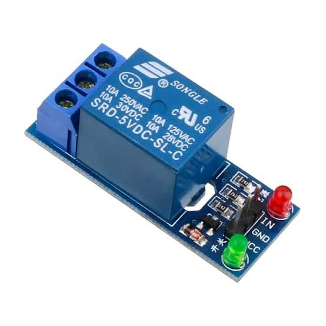
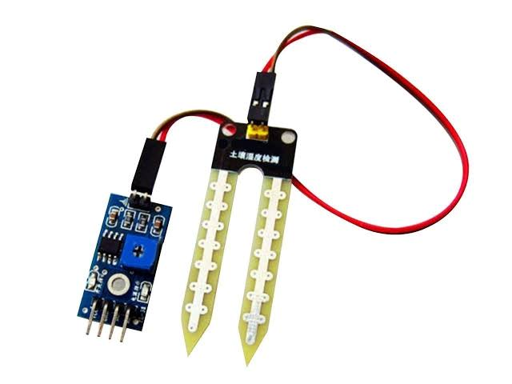
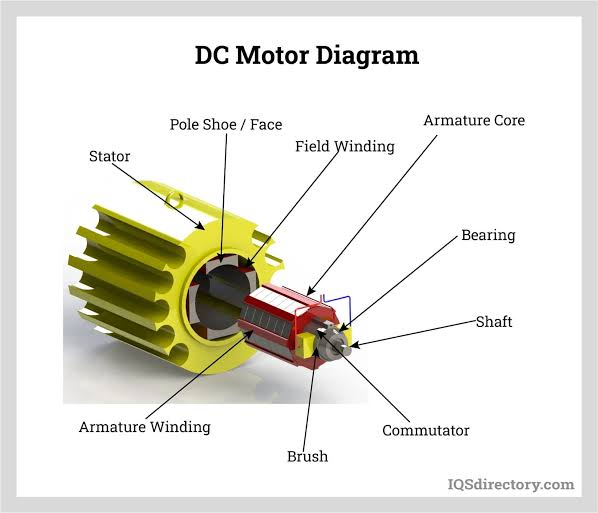
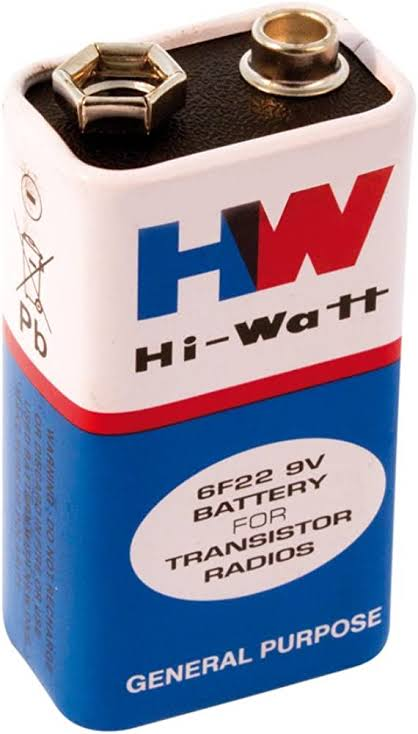
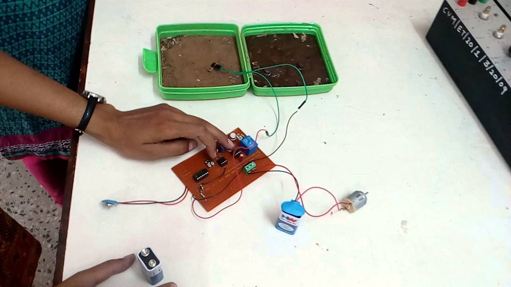

AUTOMATIC WATER PLANT IRRIGATION SYSTEM
Introduction:-
- Irrigation is the artificial application of water to the land or soil to assist in
the growing of agricultural crops.
- Oil moisture, air humidity, temperature and water level in the soil are
wirelessly transmitted using wireless technology for better production.
- It is used to assist in the growing of plants
Components:-
Relay Module:-

- Relay is an electrically operated switch.
- Like any other switch, it that can be turned on or off.
- Letting the current go through or not.
- It can be controlled with low voltages like 3.3v.
Soil moisture Sensor:-

- The sensor averages the water content over the entire length of the sensor
- Soil moisture sensor measure the volumetric water content in the soil.
- Using some other properly of the soil, such as electrical resistance
- The soil moisture sensor uses capacitance to measure dielectric permittivity of the surrounding medium.
- The sensor creates a volvtage proportional to dielectric permittivity.
DC Motor:-

- DC motor is a electronic machine.
- It converts electrical energy into mechanical energy.
- The most common types of dc motor rely on the forcesproduced by magnetic fields.
\
- It speed can be controlledby wide range using different supply voltage
Battery:-

- A battery is a device.
- That can convert chemical energy into electrical energy.
- This type reaction involves in transfer of electrons via circuit.
Working:-
- The soil moisture sensor continuously monitors the volumetric moisture content in soil.
- If the soil get dry.
- It sends the information to relay.
- Then it is in on position .
- Motor get starts working.
- Then water flows through the pump.
Result:-

Fig:-AUTOMATIC WATER PLANT IRRIGATION SYSTEM
Advantages:-
- Saves time.
- Saves water.
- Low cost and easy to implement.
- Reliable system.
- No water deficiency in crops.
Future Extension:-
- This system will helps the farmer to overcome the drawbacks of traditional irrigation system.
- Prove the new technology for former to improve the quality of their irrigation system.
- Also helps to those farmer which do not have sufficient water for their farming
Conclusion:-
- In present days especially farmers are facing problems in watering fields, its because they have no proper idea.
- When the power available that they can pump water.
- Even after then they need to wait until the field and gardens and parks are properly watered.
- This idea can save water, power, man power, time.
Previous
Next